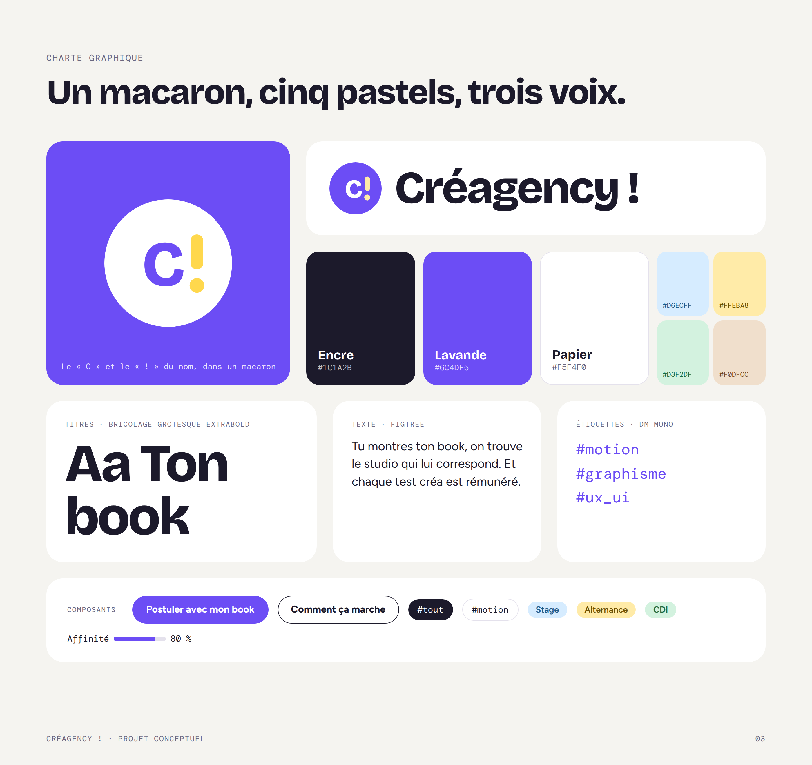
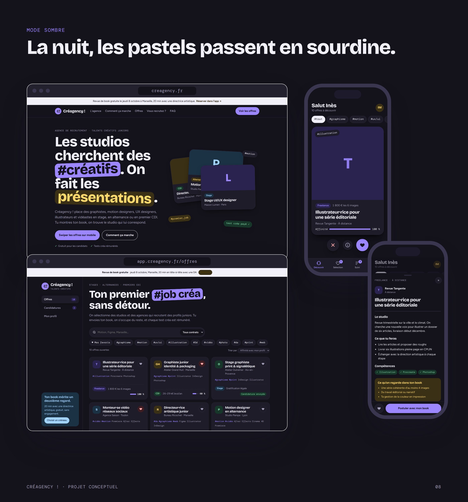
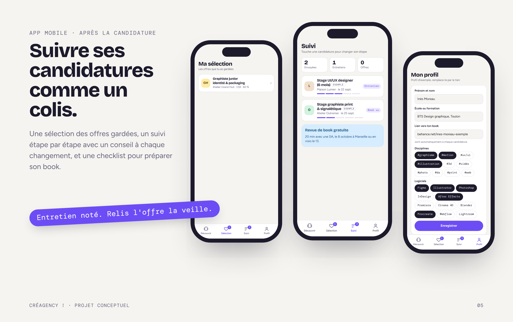

Une agence qui place les jeunes créatifs dans leur premier job, sans détour.
Faire du premier job créa une bonne expérience. Créagency ! place des graphistes, motion designers, UX designers, illustrateurs et vidéastes de 18 à 25 ans en stage, en alternance ou en premier CDI. La cible vit sur mobile, parle en hashtags et se méfie des tests gratuits.
Surligné, légèrement penché, il marque les mots clés des titres et sert de filtre dans l’app.
Les offres arrivent une par une : à droite on garde, à gauche on passe.
Tests créa payés et montant affiché, revue de book gratuite, réponse garantie.



Site vitrine, back-office desktop et app mobile, en navigation libre.